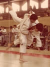

Pedro Teixeira
Rank: Sandan (3rd dan)
Member Since: 2008
Pedro began his judo training in Brussels, Belgium, in 1979. After receiving his black belt in 1983, he competed
throughout Europe in national and international team and individual championships. He was promoted to nidan in 1987.
He joined the Belgian military in 1989 and competed in the 1990 Belgian Military Championships winning bronze medals in
both the 78kg and Open divisions. Pedro moved to the United States in 1992 after completing his military service.
Pedro returned to competitive judo in 2003 at the World Masters Championships held at the Kodokan in Tokyo, Japan.
He also fought in the 2005 and 2008 World Masters Championships held in Canada and Belgium, respectively.
Honors & Achievements:
- 2nd - 2009 World Masters Championships
- 1st - 2008 Golden State Open
- 1st - 2008 California State Championships
- 1st - 2004 US Nationals (Masters)
- 3rd - 1990 Belgian Military Championships
- 3rd - 1988 Belgian Senior Nationals
- 3rd - 1985 Belgian Jr Nationals